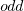
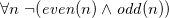
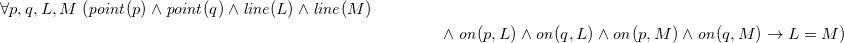

Logic and Proof
4 First Order Logic
Propositional logic provides a good start at describing the general principles of logical reasoning, but it does not go far enough. Some of the limitations are apparent even in the "Malice and Alice" example from Chapter Propositional Logic. Propositional logic does not give us the means to express a general principle that tells us that if Alice is with her son on the beach, then her son is with Alice; the general fact that no child is younger than his or her parent; or the general fact that if someone is alone, they are not with someone else. To express principles like these, we need a way to talk about objects and individuals, as well as their properties and the relationships between them. These are exactly what is provided by a more expressive logical framework known as first-order logic, which will be the topic of the next few chapters.
4.1 Functions, Relations, and Predicates
Consider some ordinary statements about the natural numbers:
- Every natural number is even or odd, but not both.
- A natural number is even if and only if it is divisible by two.
- If some natural number, , is even, then so is .
- A natural number is even if and only if is odd.
- For any three natural numbers , , and , is divides and divides , then divides .
These statements are true, but we generally do not think of them as logically valid: they depend on assumptions about the natural numbers, the meaning of the terms "even" and "odd," and so on. But once we accept the first statement, for example, it seems to be a logical consequence that the number of stairs in the White House is either even or odd, and, in particular, if it is not even, it is odd. To make sense of inferences like these, we need a logical system that can deal with objects, their properties, and relations between them.
Rather than fix a single language once and for all, first-order logic allows us to specify the symbols we wish to use for any given domain of interest. In this section, we will use the following running example:
- the domain of interest is the natural numbers, .
- there are objects,
 , , , ….
, , , …. - there are functions, addition and multiplication, as well as the square function, on this domain.
- there are predicates on this domain, "even," "odd," and "prime."
- there are relations between elements of this domain, "equal," "less than", and "divides."
For our logical language, we will choose symbols 1, 2, 3, , , , , , , , and so on, to denote these things. We will also have variables , , and ranging over the natural numbers. Note all of the following.
- Functions can take any number of arguments: if and are natural numbers, it makes sense to write and . so takes two arguments, and takes only one.
- Predicates and relations can also be understood in these terms. The
predicates and take one argument,
while the binary relations and
 take two arguments.
take two arguments. - Functions are different from predicates! A function takes one or more arguments, and returns a value. A predicate takes one or more arguments, and is either true or false. We can think of predicates as returning propositions, rather than values.
- In fact, we can think of the constant symbols as
special sorts of function symbols that take zero
arguments. Analogously, we can consider the predicates that take
zero arguments to be the constant logical values,
 and .
and . - In ordinary mathematics, we often use "infix" notation for binary functions and relations. For example, we usually write or intead of , and we write instead of . We will use these conventions when writing proofs in natural deduction, and they are supported in Lean as well.
- We will treat the equality relation, , as a special binary relation that is included in every first-order language.
What makes the language of first-order logic powerful is that one can build complex expressions out of the basic ones. Starting with the variables and constants, we can use the function symbols to build up compound expressions like these:
Such expressions are called "terms." Intuitively, they name objects in the intended domain of discourse.
Now, using the predicates and relation symbols, we can make assertions about these expressions:
Even more interestingly, we can use propositional connectives to build compound expressions like these:
The second one, for example, asserts that either is not equal to , or is less than . Remember, these are expressions in symbolic logic; in ordinary mathematics, we would express the notions using words like "is even" and "if and only if," as we did above. We will use notation like this whenever we are in the realm of symbolic logic, for example, when we write proofs in natural deduction. Expressions like these are called formulas. In contrast to terms, which name things, formulas say things; in other words, they make assertions about objects in the domain of discourse.
One can also declare function and relation symbols in Lean. For example, the symbols we have just discussed could be introduced as follows:
You can enter ℕ with \nat or \N. In Lean, the check command
can be used to make sure an expression is well-formed, and determine
what kind of expression it is:
We can even declare infix notation of binary operations and relations:
(Getting notation for numerals 1, 2, 3, … is trickier.) With
all this in place, the examples above can be rendered as follows:
In fact, all of the functions, predicates, and relations discussed
here, except for the "square" function and "prime," are defined in the
core Lean library. They become available to us when we put the commands
import data.nat and open nat at the top of a file in Lean.
Here, we declare the constants square and prime axiomatically, but
refer to the other operations and predicates in the Lean library. In
this course, we will often proceed in this way, telling you explicitly
what facts from the library you should use for exercises.
Here are some things to note about the syntax of expression in Lean:
- In contrast to ordinary mathematical notation, in Lean, functions
are applied without parentheses or commas. For example, we write
square xandadd x yinstead of and . - The same holds for predicates and relations: we write
even xandlt x yinstead of and , as one might do in symbolic logic. - The notation
add : ℕ → ℕ → ℕindicates that addition takes two arguments, both natural numbers, and returns a natural number. - Similarly, the notation
divides : ℕ → ℕ → Propindicates thatdividesis a binary relation, which takes two natural numbers as arguments and forms a proposition. In other words,divides x yexpresses the assertion thatxdividesy.
Lean can help us distinguish between terms and formulas. If we check
the expression x + y + 1 in Lean, we are told it has type ℕ, which
is to say, it denotes a natural number. If we check the expression
even (x + y + 1), we are told that it has type Prop, which is to
say, it expresses a proposition.
4.2 Quantifiers
There are two more ingredients to the language of first-order logic, namely, the universal and existential quantifiers. The universal quantifier, , followed by a variable is meant to represent the phrase "for every ." In other words, it asserts that every value of has the property in question. Using the universal quantifier, the examples with which we began this previous section can be expressed as follows:
It is common to combine multiple quantifiers of the same kind, and write, for example, in the last expression.
In Lean, you can enter the universal quantifier by writing \all. The
same examples are rendered as follows:
Here are some notes on syntax:
- In symbolic logic, the universal quantifier is usually taken to bind tightly. For example, is interpreted as , and we would write to extend the scope.
- In contrast, Lean expects a comma after that universal quantifer,
and gives the it the widest scope possible. For example,
∀ x, P ∨ Qis interpreted as∀ x, (P ∨ Q), and we would write(∀ x, P) ∨ Qto limit the scope. - After the quantifier , the variable is bound. For
example, the expression
 is
expresses that every number is even or odd. Notice that the variable
does not appear anywhere in the informal statement. The
statement is not about at all; rather is a dummy variable, a
placeholder that stands for the "thing" referred to within a phrase
that beings with the words "every thing." We think of the expression
as being the same as the
expression . Lean treats
these expressions as the same as well.
is
expresses that every number is even or odd. Notice that the variable
does not appear anywhere in the informal statement. The
statement is not about at all; rather is a dummy variable, a
placeholder that stands for the "thing" referred to within a phrase
that beings with the words "every thing." We think of the expression
as being the same as the
expression . Lean treats
these expressions as the same as well. - The expression
∀ x y z, x ∣ y → y ∣ z → x ∣ zis interpreted as∀ x y z, x ∣ y → (y ∣ z → x ∣ z), with parentheses associated to the right. The part of the expression after the universal quantifier can therefore be interpreted as saying "given thatxdividesyand thatydividesz,xdividesz." The expression is logically equivalent to∀ x y z, x ∣ y ∧ y ∣ z → x ∣ z, but we will see that, in Lean, it is often convenient to express facts like this as an iterated implication.
A variable that is not bound is called free. Notice that formulas in first-order logic say things about their free variables. For example, in the interpretation we have in mind, the formula says that is less than or equal to every natural number. The formula says exactly the same thing; we can always rename a bound variable, as long as we pick a name that does not clash with another name that is already in use. On the other hand, the formula says that is less than or equal to every natural number. This is an entirely different statement: it says something about , rather than . In other words, renaming a free variable changes the meaning of a formula.
Notice also that some formulas, like , have no free variables at all. Such a formula is called a sentence, because it makes an outright assertion, a statement that is either true or false about the intended interpretation. A couple of chapters from now, we will make the notion of an "intended interpetation" precise, and talk about what it means to be "true in an interpretation." For now, the idea that formulas say things about about object in an intended interpretation should motivate the rules for reasoning with such expressions.
Dual to the universal quantifier is the existential quantifier, , which is used to express assertions such as "some number is even," or, "between any two even numbers there is an odd number." We will discuss the existential quantifier and its use in a later chapter.
Indeed, to complete the presentation of first-order logic, we need to present the rules of the universal quantifier, the existential quantifier, and equality in natural deduction, and in Lean. In this chapter, we will start with the rules for the universal quantifier, and provide examples of the kinds of mathematical arguments they are intended to model.
4.3 Rules for the Universal Quantifier
In the Introduction we proved that the square root of two is irrational. One way to construe the statement is as follows:
For every pair of natural numbers,
and
, it is not the case that
.
The advantage of this formulation is that we can restrict our attention to the natural numbers, without having to consider the larger domain of rationals. In symbolic logic, assuming our intended domain of discourse is the natural numbers, we woud express this theorem using the universal quantifier:

How do we prove such a theorem? Informally, we would use such a pattern:
Let
…
Contradiction.
What we are really doing is proving that the universal statement
holds, but showing that it holds of "arbitrary" values and . In
natural deduction, the proof would look something like this:
Notice that after the hypothesis is canceled, we have proved without making any assumptions about and
; at this stage in the proof, they are "arbitrary," justifying the
application of the universal quantifiers in the next two rules.
This example motivates the following rule in natural deduction:

provided is not free in any uncanceled hypothesis. Here
stands for any formula that (potentially) mentions . Also remember
that if is any "fresh" variable that does not occur in  , we are
thinking of as being the same as .
, we are
thinking of as being the same as .
Notice that when we work in first-order logic, we assume that the
universal quantifier ranges over some domain. In Lean, we can declare
a "type" of objects by writing variable U : Type. We can then
declare a predicate on U by writing variable P : U → Prop. In
Lean, then, the pattern for proving a universal statement is rendered
as follows:
Read take x as "fix and arbitrary value x of U." Since we are
allowed to rename bound variables at will, we can equivalently write
either of the following:
This constitutes the introduction rule for the universal quantifier.
What about the elimination rule? Suppose we know that every number is
even or odd. Then, in an ordinary proof, we are free to assert " is
even or is odd," or " is even or is odd." In terms of
symbolic logic, this amounts to the following inference: from , we can conclude for any term . This motivates the elimination rule for
the universal quantifier:

where is an arbitrary term. In a Lean proof, this is implemented as follows:
Observe the notation: P a is obtained by "applying" the hypothesis
H to a.
The following example of a proof in natural deduction shows that if, for every , holds, and for every , holds, then for every , they both hold:
Notice that neither of the hypotheses or mention , so that is really "arbitrary" at the point where the universal quantifiers are introduced.
Here is the same proof rendered in Lean:
As an exercise, trying proving in natural deduction or Lean, or
Here is a more challenging exercise. Suppose I tell you that, in a town, there is a (male) barber that shaves all and only the men who do not shave themselves. You can show that this is a contradiction, arguing informally, as follows:
By the assumption, the barber shaves himself if and only if he does not shave himself. Call this statement (*).
Suppose the barber shaves himself. By (*), this implies that he does not shave himself, a contradiction. So, the barber does not shave himself.
But using (*) again, this implies that the barber shaves himself, which contradicts the fact we just showed, namely, that the barber does not shave himself.
Try to turn this into a formal argument in natural deduction, or in
Lean. For the latter, you need only replace each sorry below with a
proof:
4.4 Some Number Theory
Let us return to the example of the natural numbers, to see how deductive notions play out there. Suppose we have defined and in such a way that we can prove:
Then we can go on to derive as follows:
We can also prove and :
As we move from modeling basic rules of inference, however modeling actual mathematical proofs, we will tend to shift focus from natural deduction to formal proofs in Lean. Natural deduction has its uses: as a basic model of logical reasoning, it provides us with a convenient means to study metatheoretic properties such as soundness and completeness. For working within the system, however, proof languages like Lean's tend to scale better, and produce more readable proofs.
In Lean's library, there are theorems odd_of_not_even and
even_of_not_odd, whose uses are illustrated in the following:
Once again, notice the naming scheme: the conlusion is followed by the
hypothesis, separated by the word of. Notice also that when applying
the theorems, you do not need to specify the argument n: it is
implicit in the hypothesis H. We can illustrate these theorems more
concisely, by labeling n and H in the statement of the example:
In this text, we will often present theorems in the library in this way. Using these two theorems, the two facts we just proved in natural deduction can be proved in Lean as follows:
Notice that we used the command open classical in order to use the
law of the excluded middle, em (even n), to split on cases.
Here are some more facts about parity that are found in the Lean library:
To enter the "divides" symbol in Lean, you have to type \|. (The
symbol is different from the plain | character.) Here are some
examples of theorems that can be proved using these facts:
The second-to-last one is left to you as an exercise. Remember, when
you are trying to prove such theorems on your own, it is a good idea
to prove them incrementally, using sorry. For example, for the first
theorem, you might start as follows:
After checking to make sure that Lean accepts this, you can then add
intermediate have statements, and so on.
If you wanted to use these theorems later on, you could name them:
The curly braces around m and n in the first two theorems makes
m and n implicit arguments, which means that you can write, for
example, even_add H₁ H₂ for hypotheses H₁ : even m and H₂ : even
n, rather than even_add m n H₁ H₂. In fact, the first of these is
already in Lean's library:
Using these, we can go on to prove the following:
The last two are left for you to do as exercises.
Unfortunately, the facts we have presented to you so far do not let
you prove that if n is odd, then n+1 is even. Fortunately, that
fact is also in the library (succ abbreviates "successor"), and you
can use it to prove the second example below.
Let us close with some examples of elementary theorems of number theory. (These are all exercises in Chapter 1 of An Introduction to the Theory of Numbers by Niven and Zuckerman.) For the moment, we will loosen up a bit and not insist that every fact we use can be proved axiomatically; let us take, as "common knowledge," facts such as these:
- A number is even if and only if it can be expressed in as , and odd if it can be expressed in the form .
- A number is divisible by
 if and only if it leaves a remainder of
0 when you divide it by . In particular, of any consecutive
numbers , at least one of them
will be divisible by .
if and only if it leaves a remainder of
0 when you divide it by . In particular, of any consecutive
numbers , at least one of them
will be divisible by . - Expressed differently, if , then any natural number
 can
be expressed as , where .
can
be expressed as , where .
The last fact is often known as the "quotient-remainder" theorem.
Theorem. The product of any three consecutive integers is divisible by 6.
Proof. Denote the three integers by , , and . Then
either or is divisible by 2, and either , , or
is divisible by 3. So, their product is divisible by 6.
Theorem. For every , is divisible by 6.
Proof. We have , which is a product of three consecutive integers.
As exercises, try writing proving the following, informally:
- For any integer , leaves a remainder of 0 or 1
when you divide it by 4. Hence is never divisible by 4.
- If is odd, is divisible by 8.
- If
 and are odd, then is even but not divisible
by 4.
and are odd, then is even but not divisible
by 4. - Say that two integers "have the same parity" if they are both even
or both odd. Prove that if and are any two integers, then
and have the same parity.
4.5 Relativization and Sorts
In first-order logic as we have presented it, there is one intended "universe" of objects of discourse, and the universal and existential quantifiers range over that universe. For example, we could design a language to talk about people living in a certain town, with a relation to express that loves . In such a language, we might express the statement that "everyone loves someone" by writing .
You should keep in mind that, at this stage, is just a symbol. We have designed the language with a certain interpretation in mind, but one could also interpret the language as making statements about the natural numbers, where means that is less than or equal to . In that interpretation, the sentence
is true, though in the original interpretation it makes an implausible claim about the nature of love triangles. In a later chapter, we will spell out the notion that the deductive rules of first-order logic enable us to determine the statements that are true in interpretations, just as the rules of propositional logic enable us to determine the statements that are true under all truth assignments.
Returning to the original example, suppose we want to represent the statement that, in our town, all the women are strong and all the men are good looking. We could do that with the following two sentences:
These are instances of relativization. The universal quantifier ranges over all the people in the town, but this device gives us a way of using implication to restrict the scope of our statements to men and women, respectively. The trick also comes into play when we render "every prime number greater than two is odd":
We could also read this more literally as saying "for every number , if is prime and is greater than or equal to 2, then is odd," but it is natural to read it as a restricted quantifier. It is also possible to relativize the existential quantifier to say things like "some woman is strong" and "some man is good-looking." We will see how to do this in a later chapter.
Now, suppose we are studying geometry, and we want to express the fact that given any two distinct points and and any two lines and , if and both pass through and , then they have to be the same. (In other words, there is at most one line between two distinct points.) One option is to design a first-order logic where the intended universe is big enough to include both points and lines, and use relativization:

But dealing with such predicates is tedious, and there is a mild extension of first-order logic, called many-sorted first-order logic, which builds in some of the bookkeeping. In many-sorted logic, one can have different sorts of objects — such as points and lines — and a separate stock of variables and quantifiers ranging over each. Moreover, the specification of function symbols and predicate symbols indicates what sorts of arguments they expect, and, in the case of function symbols, what sort of argument they return. For example, we might choose to have a sort with variables ranging over points, a sort with variables ranging over lines, and a relation relating the two. Then the assertion above is rendered more simply as follows:
In Lean, we can model many-sorted logic by introducing a new type for each sort:
Notice that we have followed the convention of using iterated
implication rather than conjunction in the antecedent. In fact, Lean
is smart enough to infer what sorts of objects p, q, L, and M
are from the fact that they are used with the relation on, so we
could have written more simply this:
4.6 Elementary Set Theory
In a publication in the journal Mathematische Annalen in 1895, the German mathematician Georg Cantor presented the following characterization of the notion of a "set" (or Menge, in his terminology):
By a set we mean any collection M of determinate, distinct objects (called the elements of M) of our intuition or thought into a whole.
Since then, the notion of a set has been used to unify a wide range of abstractions and constructions. Axiomatic set theory, which we will discuss in a later chapter, provides a foundation for mathematics in which everything can be viewed as a set.
On a broad construal, any collection can be a set; for example, we can consider the set whose elements are Ringo Star, the number 7, and the set whose only member is the Empire State Building. With such a broad notion of set we have to be careful: Russell's paradox has us consider the set of all sets that are not elements of themselves, which leads to a contradiction when we ask whether is an element of itself. (Try it!) The axioms of set theory tell us what sets exist, and have been carefully designed to avoid paradoxical sets like that of the Russell paradox.
In practice, mathematicians are not so freewheeling in their use of sets. Typically, one fixes a domain such as the natural numbers, and consider subsets of that domain. In other words, we consider sets of numbers, sets of points, sets of lines, and so on, rather than arbitrary "sets." In this text, we will adopt this convention: when we talk about sets, we are always implicitly talking about sets of elements of some domain.
Cantor's characterization suggests that whenever we have some
property,  , of a domain, we can form the set of elements that have
that property. This is denoted using "set-builder notation" as . For example, we can consider all the following sets
of natural numbers:
, of a domain, we can form the set of elements that have
that property. This is denoted using "set-builder notation" as . For example, we can consider all the following sets
of natural numbers:
This last set is written more simply .
Given a set of objects in some domain and an object , we write
to say that is an element of . Using set-builder
notation, we can define a number of common sets and operations. The
empty set, , is the set with no elements:
Dually, we can define the universal set, , to be the set consisting of every element of the domain:
Given to sets and  , we define their union to be the set of
elements in either one:
, we define their union to be the set of
elements in either one:
And we define their intersection to be the set of elements of both:
We define the complement of a set of to be the set of elements
that are not in :

We define the set difference of two sets and to be the set
of elements in but not :
Two sets are said to be equal if they have exactly the same
elements. If and are sets, is said to be a subset of
, written , if every element of is an element of
. Notice that is equal to if and only if is a subset of
and is a subset of .
Notice also that just everything we have said about sets so far is readily representable in symbolic logic. We can render the defining properties of the basic sets and constructors as follows:
The assertion that is a subset of can be written , and the assertion that is equal to be can be
written  . These are all
statements, that is, statements with universal
quantifiers in front, followed by basic assertions and propositional
connectives. What this means is that reasoning about sets formally
often amounts to using nothing more than the rules for the universal
quantifier together with the rules for propositional logic. You should
by now be able to discern this formal structure underlying informal
proofs as well. Here are two examples.
. These are all
statements, that is, statements with universal
quantifiers in front, followed by basic assertions and propositional
connectives. What this means is that reasoning about sets formally
often amounts to using nothing more than the rules for the universal
quantifier together with the rules for propositional logic. You should
by now be able to discern this formal structure underlying informal
proofs as well. Here are two examples.
Let denotes sets of elements of some domain, .
Theorem. .
Proof. Suppose is in . Then is in ,
and either is in or is in  . In the first case, is
in and , and hence in . In the second case, is in
and , and hence . Either way, we have that is in
.
. In the first case, is
in and , and hence in . In the second case, is in
and , and hence . Either way, we have that is in
.
Conversely, suppose is in . There are now two cases.
First, suppose is in . Then is in both and
. Since is in , it is also in , and so is in
.
The second case is similar: suppose is in . Then is
in both and , and so also in . Hence, in this case
also, is in , as required.
Theorem. .
Proof. Suppose is in . Then is
in  but not , and hence it is in but not or
. This means that is in but not , and so in .
but not , and hence it is in but not or
. This means that is in but not , and so in .
Conversely, suppose is in  . Then is in
, but not in . In particular, is in neither nor
, because otherwise it would be in . So is in , and hence .
. Then is in
, but not in . In particular, is in neither nor
, because otherwise it would be in . So is in , and hence .
You can carry out such reasoning in Lean, using methods you have
already seen. For any type X, Lean gives us a type, set X, of sets
of elements of X, with the element-of relation x ∈ A. We need only
import the library file data.set and open the "namespace" set to
have the notions and notations made available to us.
We have made the type variable X implicit, because it can usually be
inferred from context. The following pattern can be used to show that
A is a subset of B:
And the following pattern be used to show that A and B are equal:
Moreover, Lean supports the following nifty feature: all of the
equivalences above are considered to hold "definitionally," which is
to say, in most situations you can treat and the left- and
right-hand-sides as being the same. In other words, you can act as
though the expression x ∈ A ∩ B is no different from x ∈ A ∧ x ∈
B, and similarly for the other constructors.
In the second example, we annotated x with its type, X, because
otherwise there is not enough information for Lean to infer which
"empty set" we have in mind. You can type the symbols ⊆, ∅, ∪,
∩, \ as \subeq \empty, \un, \i, and \\,
respectively. The universal set is denoted univ, and set
complementation is denoted with a negation symbol.
The identifications above make it easy to prove some containment relations:
Here is the proof of the first identity that we proved informally above:
Notice that it is considerably longer than the informal proof above,
because we have spelled out every last detail, though it may not be
more readable. Keep in mind that you can always write long proofs
incrementally, using sorry. You can also break up long proofs into
smaller pieces:
Notice that the two propositions depend on the variables A, B, and
C, which have to be supplied as arguments when they are
applied. They also depend on the underlying type, X, but because the
variable X was marked implicit, Lean figures it out from the
context.